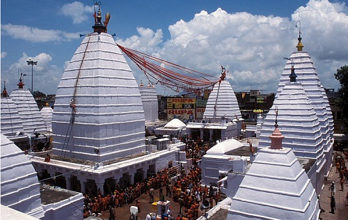

Baidyanath Temple, Jharkhand
One of the most visited Shiva temples in the country is the Vaidyanath Temple in Deogarh in Jharkhand. It is a jyotirlinga where Lord Shiva is worshipped as Vaidyanath, the Lord who was a vaidya or doctor. It is believed that this is the place where Lord Shiva treated the severed head offered to him by his staunch devotee Ravana.